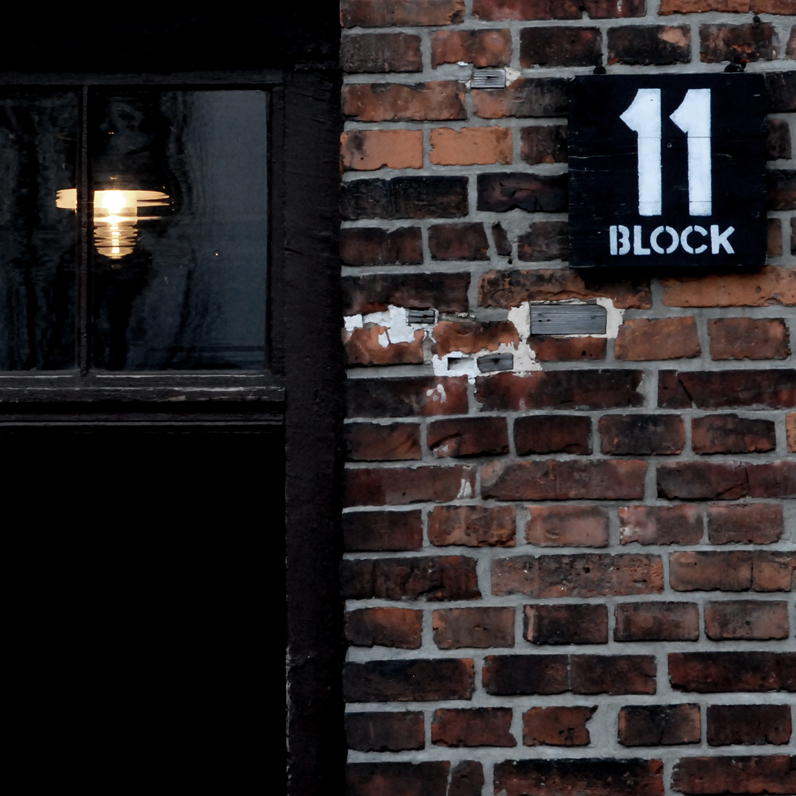

Auschwitz Reportage
Gennaio 2007
Katowice, Polonia · Galleria Za Szybą
"fotografie d'autore"
La mia fotografia nasce nel silenzio rosso di una camera oscura, tra l'odore acre dei chimici e la magia dell'immagine che emerge lenta dalla carta. Ho imparato a vedere il mondo prima ancora di scattarlo, sviluppando la pazienza necessaria per attendere che la luce si posasse esattamente dove volevo io.
Oggi, il digitale mi offre velocità, ma il mio approccio resta artigianale. Non cerco la perfezione del pixel, ma l'imperfezione dell'umano. Prediligo la strada, i volti segnati dal lavoro, le mani che raccontano storie. La mia tecnica si è evoluta, ma l'obiettivo è lo stesso: connettermi con l'anima del soggetto.

Gennaio 2007
Katowice, Polonia · Galleria Za Szybą

Formia 2004 · Teano 2006 · Campobasso 2005
Mostra presso il Museo Contemporaneo di Napoli, giugno 2024.
Esposizione alla Fondazione Photo di Torino, settembre 2024.